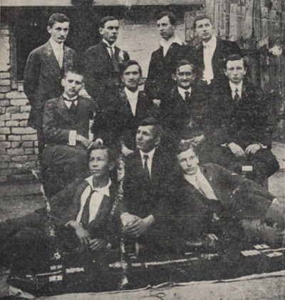
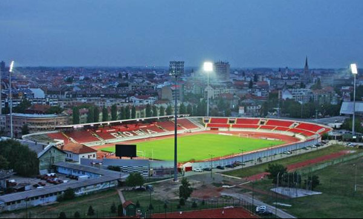

FK Vojvodina
FK Vojvodina je fudbalski klub iz Novog Sada. Osnovan je 1914. godine, pa je trenutno najstariji klub u Superligi Srbije.
Istorija

Klub je osnovan 1914, zaslugom novosadskih studenata. Posle rata, iz Praga je donesen komplet dresova SK Slavije, koji su ostali zaštitni znak Vojvodine do današnjih dana. Godine 1924, zajedno sa klubom Juda Makabi, Vojvodina gradi stadion "Karađorđe", prema nacrtu inženjera i predsednika kluba Dake Popovića. Do tada, i jedni i drugi su igrali na stadionu kod jodne banje, koji je pripadao novosadskom klubu UTK, koji je okupljao mađarsku omladinu. Stadion "Karađorđe" je i današnji stadion kluba, a 2. aprila 2007. vraćeno mu je staro ime "Karađorđe".
Rezultati
Iako povremen učesnik prve lige u međuratnom periodu, ozbiljniju ulogu u prvoj ligi, Vojvodina je počela da igra pedesetih godina 20. veka. Prvi ozbiljniji rezultat je 4. mesto 1952/53. godine. Narednih godina, Vojvodina je redovno pobeđivala favorite, ali nije uspela da osvoji titulu. 1955. godine je izboren plasman u Mitropa kup (preteču kupa UEFA), a ostale su zapamćene pobede protiv Rome u Novom Sadu sa 4-1 i u Rimu sa 5-4. I narednih godina, Voša je učestvovala u ovom kupu i ostvarivala zapažene rezultate. Tadašnja zlatna generacija je stekla velike simpatije svojom lepršavom igrom, a najpoznatiji igrači su bili Vujadin Boškov i Todor Veselinović.Početkom 60-tih, izvršena je smena generacija i već 1962. godine, Vojvodina postaje vicešampion. Konačno, 1965/66. godine, Voša stiže do prve titule.
Najpoznatiji igrači ovog tima su bili Ilija Pantelić i Silvester Takač. U Kupu šampiona, Voša stiže do četvrtfinala, gde je izbačena od Seltika iz Glazgova, koji je te godine i osvojio ovaj kup, a jedini poraz mu je nanela upravo Vojvodina u Novom Sadu.70-tih godina, Vojvodina je često bila u samom vrhu tabele, a 1974/75. godine je u poslednjem kolu ispustila titulu, ostavši na drugom mestu.80-te godine su bile krizne, kulminirajući ispadanjem u drugu ligu 1985/86. Usledila je rekonstrukcija tima, koji se ekspresno vraća u Prvu ligu, a za dve sezone ovaj novi tim Vojvodine osvaja i titulu 1988-89, u jednoj od poslednjih sezona pred raspad SFRJ.90-te godine, Vojvodina dočekuje u smanjenoj prvoj ligi SRJ. U početku, Vojvodina važi za "večitog trećeg", stiže do jesenje titule 1994. a umalo i do trofeja.
Od većih uspeha je i plasman u finale kupa 1997. godine, kao i finale Intertoto kupa 1998. godine, da bi posle raznih kriza, štrajkova igrača i smena rukovodstava, određena stabilizacija usledila tek 2006. godine.U sezoni 2006/07. Vojvodina zauzima treće mesto u Superligi i igra u finalu nacionalnog kupa a time obezbeđuje mesto u Kupu UEFA.Godinu 2007/08. tim započinje protiv malteškog tima Hibernijans koga lako dobija kod kuće sa 5-1 i u gostima sa 2-0. U sledećem kolu kvalifikacija izgubio je od madridskog Atletika, rezultatima 0-3 u gostima i 1-2 kod kuće.
Već u sledećoj sezoni 2008/09. klub je imao najuspešniju prvenstvenu sezonu od raspada Jugoslavije, završivši sezonu na drugom mestu, iza Partizana, a ispred Crvene zvezde, ali je imao isti učinak u Evropi kao i prethodne sezone. U sezoni 2009/10. klub nije bio toliko uspešan u prvenstvu, pošto je završio na 5. mestu, ali je zato stigao do finala Kupa Srbije, gde je poražen od Crvene zvezde sa 3:0.Sezonu 2010/11. završava na 3. mestu u Superligi, dok u Kupu Srbije stiže do finala. Finale je obeležio veliki skandal, kada su igrači Vojvodine u 83. minutu napustili teren pri rezultatu 2:1 za Partizan, posle nekoliko kontroverznih odluka sudije, kasnije je utakmica registrovana službenim rezultatom 3:0 u korist Partizana.
Uspesi
- Nacionalni
- Prvenstvo SFR Jugoslavije
- Prvak: 1965/66., 1988/89.
- Drugo mesto: 1956/57., 1961/62., 1974/75.
- Superliga Srbije
- Drugo mesto: 2008/09.
- Nacionalni kup
- Finalista Kupa Jugoslavije: 1951.
- Finalista Kupa SR Jugoslavije: 1996/97.
- Finalista Kupa Srbije: 2006/07., 2009/10., 2010/11.
- Prvenstvo SFR Jugoslavije
- Međunarodni
- Mitropa kup
- Osvajac kup: 1977
- UEFA Intertoto kup
- Finalista: 1998
- Mitropa kup